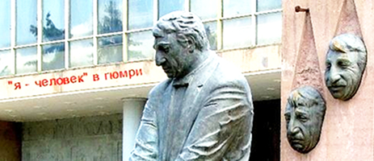
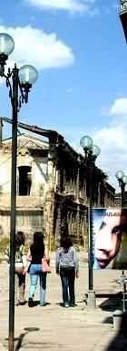
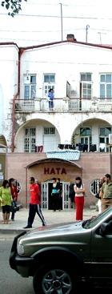
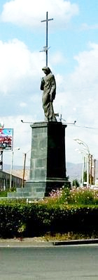
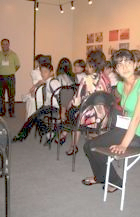

У ПАМЯТНИКА ФРУНЗИКА ЛИЦО УСТАВШЕЕ И ПЕЧАЛЬНОЕ

Гюмри – уже третий город нашего кинофестиваля. Сразу могу сказать, что об этом городе я был наслышан больше, чем о предыдущих двух. Конечно же, первая ассоциация с Гюмри, которая приходит в голову – 102-ая российская военная база. Вторая – недействующая железная дорога Гюмри-Карс (Турция), о которой так много писала и пишет армянская пресса. И, наконец, я знал, что Гюмри, наряду с другими городами Армении, сильно пострадал во время землетрясения 1988 года.
Следы землетрясения двадцатилетней давности видны в городе и сегодня. В разных районах Гюмри остаются полуразрушенные, расколовшиеся, обвалившиеся здания. Нельзя сказать, что их очень много, но, тем не менее, они бросаются в глаза сразу.
Кстати, местные жители говорят, что во время землетрясения особенно сильно пострадали и были разрушены здания, построенные во время СССР. Столетние дома выдержали удар стихии.
Город мне понравился. В нем чувствуется какой-то неуловимый восточный шарм. Может быть, близость границы с Турцией сказывается ...
А еще в местном театре долгое время играл знаменитый Фрунзик Мкртчян, который и сам был родом из Гюмри. Перед театром установлен памятник Фрунзику – он сидит, по-детски поджав ноги под стул, положив руки на колени. Рядом с ним каменная плита с высеченными на ней двумя масками актера – грустный и смеющийся Фрунзик. Две маски - трагедия и комедия одного актера.
У памятника Фрунзика лицо уставшее и печальное.
Сейчас весь центр города в строительных лесах. На одной из главных площадей реставрируется церковь, реконструируется сама площадь, строится здание мэрии. Правда, судя по размерам будущего места работы здешних градоначальников, в нем должна заботиться о благе гюмрийцев не одна сотня чиновников.
Новая мэрия, в которой уже начаты и внутренние работы, поражает своими размерами и занимает четверть пространства вокруг площади. Когда я увидел здание, то решил, что здесь будет открыт международный бизнес-центр или, как минимум, университет. «Нет», - разочаровал меня таксист, - «Там наш мэр будет сидеть».
Следы землетрясения двадцатилетней давности видны в городе и сегодня. В разных районах Гюмри остаются полуразрушенные, расколовшиеся, обвалившиеся здания. Нельзя сказать, что их очень много, но, тем не менее, они бросаются в глаза сразу.
Кстати, местные жители говорят, что во время землетрясения особенно сильно пострадали и были разрушены здания, построенные во время СССР. Столетние дома выдержали удар стихии.
Город мне понравился. В нем чувствуется какой-то неуловимый восточный шарм. Может быть, близость границы с Турцией сказывается ...
А еще в местном театре долгое время играл знаменитый Фрунзик Мкртчян, который и сам был родом из Гюмри. Перед театром установлен памятник Фрунзику – он сидит, по-детски поджав ноги под стул, положив руки на колени. Рядом с ним каменная плита с высеченными на ней двумя масками актера – грустный и смеющийся Фрунзик. Две маски - трагедия и комедия одного актера.
У памятника Фрунзика лицо уставшее и печальное.
Сейчас весь центр города в строительных лесах. На одной из главных площадей реставрируется церковь, реконструируется сама площадь, строится здание мэрии. Правда, судя по размерам будущего места работы здешних градоначальников, в нем должна заботиться о благе гюмрийцев не одна сотня чиновников.
Новая мэрия, в которой уже начаты и внутренние работы, поражает своими размерами и занимает четверть пространства вокруг площади. Когда я увидел здание, то решил, что здесь будет открыт международный бизнес-центр или, как минимум, университет. «Нет», - разочаровал меня таксист, - «Там наш мэр будет сидеть».
ГЮМРИЙСКИЙ ТАКСИСТ

И кстати, о гюмрийских таксистах. Я убедился в том, что города большинство из них не знает. Проезжая по одной из площадей, в центре которой установлена статуя девушки с крестом, я спросил таксиста, как называется это место.
«Площадь Ленина, дорогой», - не задумываясь, ответил он. «Неужели не сменили название?» - удивился я. Таксист задумался на пару секунд: «Конечно, поменяли». Я поинтересовался «современным» названием. Таксист опять задумался и молча подъехал к тротуару. Притормозил. «Вон там, на стене написано», - указал он на табличку. «Площадь независимости», гласила она.
Я поблагодарил доброго таксиста и мы поехали дальше. Через какое-то время он повернулся ко мне с вопросом: «И что там написано было?» Я ответил. «Да», - полувопросительно, полускептически пробурчал наш водитель. Наверное, ему не очень понравился факт переименования площади. А может быть, он скептически относился к независимости? Надо было спросить его об этом...
Потом, еще пару раз, сев в такси, мы сами диктовали таксистам, как правильно доехать до нужного нам места и где лучше повернуть.
«Площадь Ленина, дорогой», - не задумываясь, ответил он. «Неужели не сменили название?» - удивился я. Таксист задумался на пару секунд: «Конечно, поменяли». Я поинтересовался «современным» названием. Таксист опять задумался и молча подъехал к тротуару. Притормозил. «Вон там, на стене написано», - указал он на табличку. «Площадь независимости», гласила она.
Я поблагодарил доброго таксиста и мы поехали дальше. Через какое-то время он повернулся ко мне с вопросом: «И что там написано было?» Я ответил. «Да», - полувопросительно, полускептически пробурчал наш водитель. Наверное, ему не очень понравился факт переименования площади. А может быть, он скептически относился к независимости? Надо было спросить его об этом...
Потом, еще пару раз, сев в такси, мы сами диктовали таксистам, как правильно доехать до нужного нам места и где лучше повернуть.
ГЮМРИ, РОССИЯ, КИТАЙ

В Гюмри проще ориентироваться – здесь больше надписей на русском языке, чем в других городах Армении. Английских надписей мало. Наверное, это влияние российской военной базы. Хотя, как ни странно, русские военные в городе мне встретились всего несколько раз. Чаще встречались армяне в форме российских военнослужащих. У большинства из них были шевроны военно-воздушных сил России.
Как мне рассказали местные журналисты, российские военные и их семьи живут достаточно замкнуто в своем военном городке. Инфраструктура городка позволяет его жителям жить автономно. Впрочем, говорят, что база будет расширяться и в скором будущем к ее городку, полигонам, территории непосредственно базы добавятся еще пара дополнительных территорий на западе Гюмри.
А еще ходят слухи, что в Гюмри Москва откроет штаб управления своими военными базами на Южном Кавказе. Что-то вроде того российского штаба, который был выведен из Тбилиси пару лет тому назад. Правда, говорят, что теперь гюмрийский штаб будет управлять российскими военными базами в Армении, Абхазии и Южной Осетии.
Интересно, когда я спрашивал местных о том, насколько реально открытие границы и железнодорожного сообщения с Турцией, большинство отвечало, что это возможно, но навряд ли произойдет скоро. А некоторые добавляли: «Откроют, если Москва разрешит».
Судя по всему, в Гюмри Россию любят. Даже на детской карусели в местном парке аттракционов красуется разноцветная надпись – Гюмри, Россия, Китай. Почему именно Китай, не совсем понятно. А может просто символизируется братство народов отдельно взятых стран и одного города.
Как мне рассказали местные журналисты, российские военные и их семьи живут достаточно замкнуто в своем военном городке. Инфраструктура городка позволяет его жителям жить автономно. Впрочем, говорят, что база будет расширяться и в скором будущем к ее городку, полигонам, территории непосредственно базы добавятся еще пара дополнительных территорий на западе Гюмри.
А еще ходят слухи, что в Гюмри Москва откроет штаб управления своими военными базами на Южном Кавказе. Что-то вроде того российского штаба, который был выведен из Тбилиси пару лет тому назад. Правда, говорят, что теперь гюмрийский штаб будет управлять российскими военными базами в Армении, Абхазии и Южной Осетии.
Интересно, когда я спрашивал местных о том, насколько реально открытие границы и железнодорожного сообщения с Турцией, большинство отвечало, что это возможно, но навряд ли произойдет скоро. А некоторые добавляли: «Откроют, если Москва разрешит».
Судя по всему, в Гюмри Россию любят. Даже на детской карусели в местном парке аттракционов красуется разноцветная надпись – Гюмри, Россия, Китай. Почему именно Китай, не совсем понятно. А может просто символизируется братство народов отдельно взятых стран и одного города.
ФЕСТИВАЛЬ

Гюмрийский фестиваль меня разочаровал. Вроде бы все было четко организованно, детей из соседних сел привозили на просмотры и также организованно увозили обратно.
Перед началом просмотров местные организаторы коротко объясняли детям, какой фильм будет демонстрироваться, о чем идет речь в нем. В общем, наверное, после этого можно было сам фильм и не смотреть. В целом можно охарактеризовать общую ситуацию во время просмотров и последующих дискуссий как большой открытый урок, который ведут сразу несколько строгих, но очень справедливых учителей.
Особенно меня поразил приглашенный гость фестиваля по имени Марко. Как нам объяснили, Марко – сменивший имя, принявший христианство мигрант из Ирана, который хочет принять гражданство Армении. По профессии – вертолетчик.
После просмотров фильмов Марко выходил на сцену перед белым полотнищем экрана и начинал вести дискуссию. Дети по очереди высказывали свое мнение о фильме, отвечали на вопросы. У меня создалось впечатление, что они отвечают хорошо вызубренный урок. Отточенные фразы о необходимости установления мира во всем мире, братстве народов, патриотизме.
Учителя удовлетворенно кивали после ответов детей, с нежностью поглядывая на прилежных учеников и учениц. Если вдруг кто-то отвечал невпопад или (какой ужас!) высказывал свое личное мнение, учителя с явным неудовольствием взирали на нерадивого ученика.
Одна из девочек, явно под впечатлением от фильма, стала что-то говорить с места. Марко прервал ее: «Девочка! Подними руку, чтобы попросить слова. Встань. Говори. Теперь садись». Марко явно был приверженцем жесткой дисциплины. Или привык сам к ней.
Если Марко не удовлетворяли ответы детей или же кто-то высказывал мнение, отличное о мнения самого Марко, он с неприкрытой грустью в глазах объяснял детям, что они неправильно поняли тот или иной фильм.
«Правильно» объяснив все, Марко с чувством очень тяжелого, но священного долга вопрошал: «А теперь вы все поняли, дети?» Дети послушно кивали головами.
После просмотра фильма «Таксист из Пенджаба», Марко объяснил детям, что сикхи, кем был главный герой фильма, на самом деле очень странные люди. Что большинство из них просто нельзя назвать хорошими и что к ним надо относиться как минимум с опаской.
После просмотра фильма об Афганистане, Марко объяснил различия между шариатом и гражданским законом в этой стране. Рассказал, как афганцы покупают себе жен, о бесправии женщин в исламских странах, о том, что там в браке главную роль играют деньги. Предложил задуматься о страшном будущем исламских стран.
Вообще, стоит сказать, что Марко неоднократно отвлекался на тему религии. «Вам повезло, что вы христиане. Ислам – страшная религия!», - вещал он. Учителя согласно кивали в такт его словам. Миротворец Марко довольно улыбался.
После просмотра фильма об арабо-израильском конфликте слова попросила учительница истории. Марко пригласил ее выйти на сцену.
«Мы – не оккупанты!!!», - выкрикнула в зал учительница истории. От неожиданности у меня выпал блокнот из рук. Зал притих. Дети поняли, что этот урок им придется отвечать позднее и для них же лучше будет, если они его запомнят хорошо.
В общем, учительница объяснила, что Нагорный Карабах был передан Азербайджану Советским Союзом и если бы Азербайджан добровольно вернул его Армении, то никакого конфликта не случилось. Что то же самое происходит в Южной Осетии, которая хочет жить на своей исторической земле. «Все должны принять историческую справедливость и тогда не будет войн. У всех есть своя прародина, с которой и надо начинать отсчет! Я знаю историю!», - закончила выступление она.
Марко понял свою вину. Он рассказал, что карабахский конфликт ни в коем случае нельзя сравнивать с арабо-израильским противостоянием. Объяснил, что Израиль в 1949 году честно купил земли у арабов, а теперь те требуют проданное их предками обратно.
Марко и учительница стояли на сцене, с воодушевлением обсуждая различия этих двух конфликтов. Дети в зале откровенно скучали. Вскоре им все надоело и они занялись обсуждением своих детских проблем и секретов.
В один из дней на фестиваль забрела девушка-полька из «Корпуса мира». Посмотрев очередной фильм, она на дискуссии подняла вопрос института девственности на Кавказе.
«Меня очень волнует этот вопрос», - рассказала о своих переживаниях она. – На Кавказе так много девственниц!» Учителя, вздрогнув, как по команде, следили за реакцией учеников. Мальчики ехидно улыбались, девочки краснели.
Новая тема воодушевила Марко. Он продолжил дискуссию с посланцем «Корпуса мира». Дети вскоре откровенно заскучали – речь шла на английском и переводчица не успевала переводить оживленное обсуждение этой всекавказской проблемы.
Перед началом просмотров местные организаторы коротко объясняли детям, какой фильм будет демонстрироваться, о чем идет речь в нем. В общем, наверное, после этого можно было сам фильм и не смотреть. В целом можно охарактеризовать общую ситуацию во время просмотров и последующих дискуссий как большой открытый урок, который ведут сразу несколько строгих, но очень справедливых учителей.
Особенно меня поразил приглашенный гость фестиваля по имени Марко. Как нам объяснили, Марко – сменивший имя, принявший христианство мигрант из Ирана, который хочет принять гражданство Армении. По профессии – вертолетчик.
После просмотров фильмов Марко выходил на сцену перед белым полотнищем экрана и начинал вести дискуссию. Дети по очереди высказывали свое мнение о фильме, отвечали на вопросы. У меня создалось впечатление, что они отвечают хорошо вызубренный урок. Отточенные фразы о необходимости установления мира во всем мире, братстве народов, патриотизме.
Учителя удовлетворенно кивали после ответов детей, с нежностью поглядывая на прилежных учеников и учениц. Если вдруг кто-то отвечал невпопад или (какой ужас!) высказывал свое личное мнение, учителя с явным неудовольствием взирали на нерадивого ученика.
Одна из девочек, явно под впечатлением от фильма, стала что-то говорить с места. Марко прервал ее: «Девочка! Подними руку, чтобы попросить слова. Встань. Говори. Теперь садись». Марко явно был приверженцем жесткой дисциплины. Или привык сам к ней.
Если Марко не удовлетворяли ответы детей или же кто-то высказывал мнение, отличное о мнения самого Марко, он с неприкрытой грустью в глазах объяснял детям, что они неправильно поняли тот или иной фильм.
«Правильно» объяснив все, Марко с чувством очень тяжелого, но священного долга вопрошал: «А теперь вы все поняли, дети?» Дети послушно кивали головами.
После просмотра фильма «Таксист из Пенджаба», Марко объяснил детям, что сикхи, кем был главный герой фильма, на самом деле очень странные люди. Что большинство из них просто нельзя назвать хорошими и что к ним надо относиться как минимум с опаской.
После просмотра фильма об Афганистане, Марко объяснил различия между шариатом и гражданским законом в этой стране. Рассказал, как афганцы покупают себе жен, о бесправии женщин в исламских странах, о том, что там в браке главную роль играют деньги. Предложил задуматься о страшном будущем исламских стран.
Вообще, стоит сказать, что Марко неоднократно отвлекался на тему религии. «Вам повезло, что вы христиане. Ислам – страшная религия!», - вещал он. Учителя согласно кивали в такт его словам. Миротворец Марко довольно улыбался.
После просмотра фильма об арабо-израильском конфликте слова попросила учительница истории. Марко пригласил ее выйти на сцену.
«Мы – не оккупанты!!!», - выкрикнула в зал учительница истории. От неожиданности у меня выпал блокнот из рук. Зал притих. Дети поняли, что этот урок им придется отвечать позднее и для них же лучше будет, если они его запомнят хорошо.
В общем, учительница объяснила, что Нагорный Карабах был передан Азербайджану Советским Союзом и если бы Азербайджан добровольно вернул его Армении, то никакого конфликта не случилось. Что то же самое происходит в Южной Осетии, которая хочет жить на своей исторической земле. «Все должны принять историческую справедливость и тогда не будет войн. У всех есть своя прародина, с которой и надо начинать отсчет! Я знаю историю!», - закончила выступление она.
Марко понял свою вину. Он рассказал, что карабахский конфликт ни в коем случае нельзя сравнивать с арабо-израильским противостоянием. Объяснил, что Израиль в 1949 году честно купил земли у арабов, а теперь те требуют проданное их предками обратно.
Марко и учительница стояли на сцене, с воодушевлением обсуждая различия этих двух конфликтов. Дети в зале откровенно скучали. Вскоре им все надоело и они занялись обсуждением своих детских проблем и секретов.
В один из дней на фестиваль забрела девушка-полька из «Корпуса мира». Посмотрев очередной фильм, она на дискуссии подняла вопрос института девственности на Кавказе.
«Меня очень волнует этот вопрос», - рассказала о своих переживаниях она. – На Кавказе так много девственниц!» Учителя, вздрогнув, как по команде, следили за реакцией учеников. Мальчики ехидно улыбались, девочки краснели.
Новая тема воодушевила Марко. Он продолжил дискуссию с посланцем «Корпуса мира». Дети вскоре откровенно заскучали – речь шла на английском и переводчица не успевала переводить оживленное обсуждение этой всекавказской проблемы.
ВПЕРЕД, НА ЕРЕВАН
Из Гюмри мы выехали в следующий город фестиваля – Ереван. Дорога проходила между пустынными и выжженными солнцем каменистыми холмами.
Во впадине между двумя такими холмами валялся ржавый скелет автобуса. Над ним парила какая-то хищная птица.
На горизонте на склоне горы горела высохшая трава. Дым смешивался с низкими облаками. Россыпи красных камней добавляли пейзажу апокалиптический оттенок. Неожиданно позади нас послышался вой сирены. Нас нагоняла полицейская машина. Водитель остановился, вышел. Вышли и мы. Увидев у меня в руках фотоаппарат, полицейские поинтересовались, кто мы такие, откуда и куда едем. Объяснили. Они отвели нашего водителя в сторону. Через какое-то время тот вернулся. «Оштрафовали?» - поинтересовались мы. «Дал им денег», - сплюнув в окно, ответил он. – «Хотели 10 тысяч. Сторговались на трех».
До Еревана оставался час езды.
Репортаж Ираклия Чихладзе
Гюмри, Армения
сентябрь 2008
опубликовано: 15.01.2009
Фестиваль мира и прав человека в Армении проведен Кавказским Центром Миротворческих Инициатив при поддержке Фонда содействие Евразия - Армения за счет средств Агентства США по международному развитию - USAID
На горизонте на склоне горы горела высохшая трава. Дым смешивался с низкими облаками. Россыпи красных камней добавляли пейзажу апокалиптический оттенок. Неожиданно позади нас послышался вой сирены. Нас нагоняла полицейская машина. Водитель остановился, вышел. Вышли и мы. Увидев у меня в руках фотоаппарат, полицейские поинтересовались, кто мы такие, откуда и куда едем. Объяснили. Они отвели нашего водителя в сторону. Через какое-то время тот вернулся. «Оштрафовали?» - поинтересовались мы. «Дал им денег», - сплюнув в окно, ответил он. – «Хотели 10 тысяч. Сторговались на трех».
До Еревана оставался час езды.
Репортаж Ираклия Чихладзе
Гюмри, Армения
сентябрь 2008
опубликовано: 15.01.2009
Фестиваль мира и прав человека в Армении проведен Кавказским Центром Миротворческих Инициатив при поддержке Фонда содействие Евразия - Армения за счет средств Агентства США по международному развитию - USAID